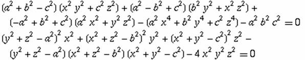

Propuesta de José Carlos Chávez Sandoval, estudiante peruano de Matemática Pura en la Universidad Nacional Mayor de San Marcos
Problema 327
Dado un triangulo ABC, sea un punto P en su plano y sean x=AP, y=BP, z=CP. Demostrar que:

http://mathworld.wolfram.com/TripolarCoordinates.html (Euler 1786).